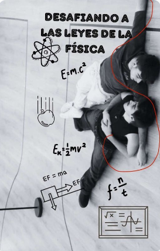

La cuadratura del círculo
Todo iba bien, hasta que dejó de irlo. Las necesidades de descubrimiento ponen distancia entre Juanjo y Martin, ¿podrán volver a encontrarse?
The Dancer - Juantin ot2023
Martin es bailarín, o querría serlo. Se esta empezando a introducir en el mundo del teatro y el baile profesional. Todo mientras aprende a convivir consigo mismo después de una época de negrura.
Juanjo esta en una ingeniera que no le gusta, con una vida que le gustaría mejorar pero que gracias a sus amigos y a la música no es tan mala como podría parecer.
Dos almas predestinadas a encontrarse.
¿Destinadas a amarse o a dañarse?
Que pastelón - Juantin (OT3023)
Donde Juanjo y Martin se mudan juntos y el novio de Martin esta muy nervioso con que su pareja conviva junto al maño.

Desafiando a las leyes de la física
[...]Martin y Juanjo no pueden ser más opuestos, y sin embargo una fuerza magnética les atrae el uno hacia el otro, como si fueran los polos opuestos de dos imanes. El problema es que Juanjo está aún dentro del armario, y que Martin tiene un exnovio que parece hacerle la vida imposible... Nada es fácil de controlar para ambos chicos, y mucho menos de quien se enamora cada uno. Porque en el amor lo mejor es dejar que todo fluya según las leyes de la física.